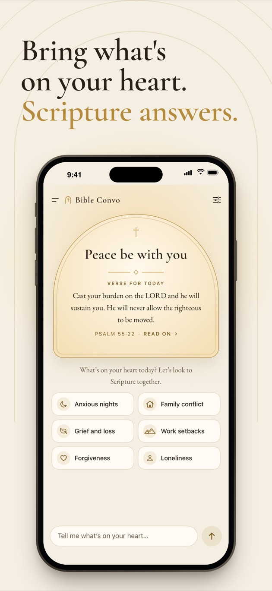
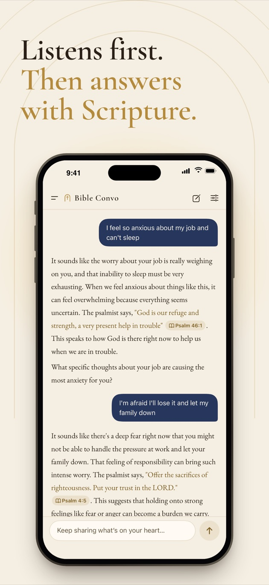
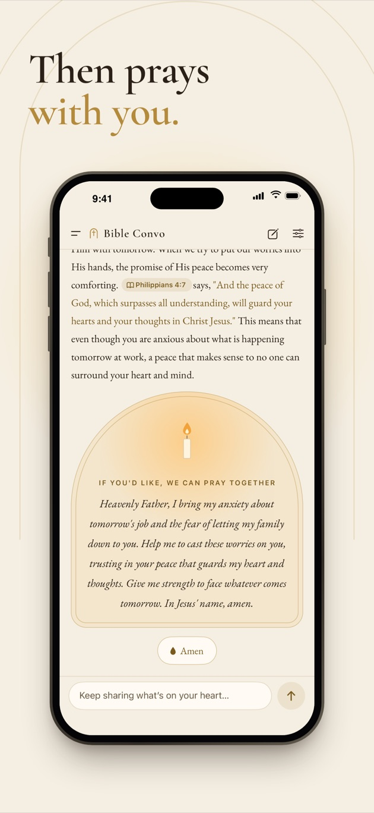

A Bible AI that listens like a pastor, entirely on your iPhone
Share what's on your heart. Bible Convo listens first, answers with Scripture and, when the time is right, prays with you. Nothing is uploaded: no account, no ads, no tracking. Try it free for 3 days, then a one-time purchase. Not a subscription.
Download on the App Store
Requires iOS 18 or later and an iPhone with 6 GB of memory or more



How it is different
- A real conversation: not a list of verses, but a gentle back-and-forth like with a caring pastor, with Scripture woven in and a prayer when the time is right.
- Accurate Scripture: quotes only the World English Bible, the King James Version or the Chinese Union Version, and replaces any misquote with the original text. Tap a reference to read it in context.
- Fully offline and private: the AI runs on your iPhone. Your conversations never leave the device.
- Care in hard moments: if you mention thoughts of harming yourself, it first shows crisis lines for your region, then keeps talking with you.
- English, Simplified and Traditional Chinese: it answers in the language you write in.
Questions
Where are my conversations processed?
On your iPhone. The language model (Google Gemma 4) and the search model run on the device; nothing goes through a server.
Are my conversations stored on a server?
No, there is no server. Your history is stored only on this iPhone, left out of iCloud and computer backups, encrypted while the phone is locked, and you can delete it at any time.
Are my conversations used to train AI?
No. They are never sent to us, so we never see them and cannot train on them.
Which Bible translations does it use?
The World English Bible and the King James Version in English, and the Chinese Union Version (Simplified and Traditional) in Chinese, all public domain. Every quotation is checked word for word against the text in the app, and misquotes are replaced with the original.
How much does it cost?
It is free to download with a 3-day free trial with unlimited use. After that, a one-time purchase ($2.99 in the US; local prices on the App Store) unlocks it for good. No subscription, no automatic charges.
Which iPhones are supported?
iPhones with 6 GB of memory or more (iPhone 13 Pro, iPhone 14 or newer) on iOS 18 or later. The AI models take about 3.7 GB; on iOS 26 and later they download from the App Store together with the app. Wi-Fi recommended.
Can it replace a pastor or counselor?
No. Bible Convo is a devotional companion. If you are having thoughts of harming yourself, please contact someone you trust, a local crisis line or emergency services right away.